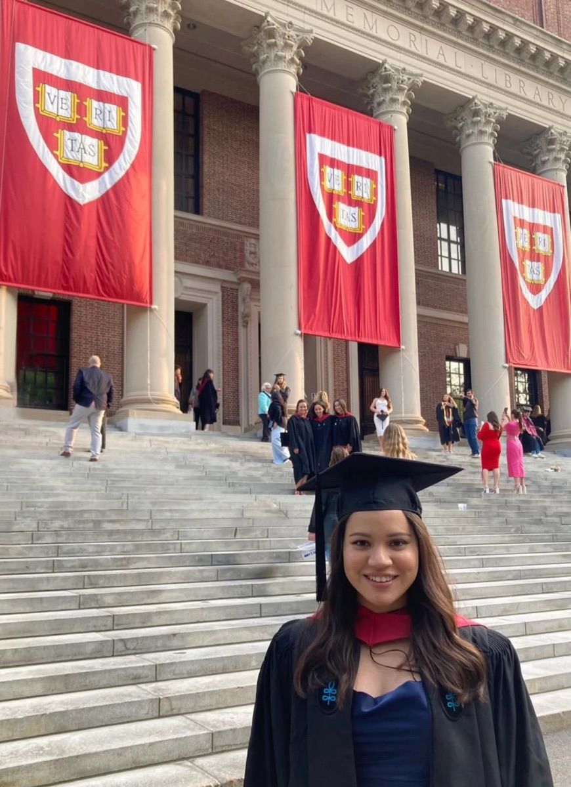
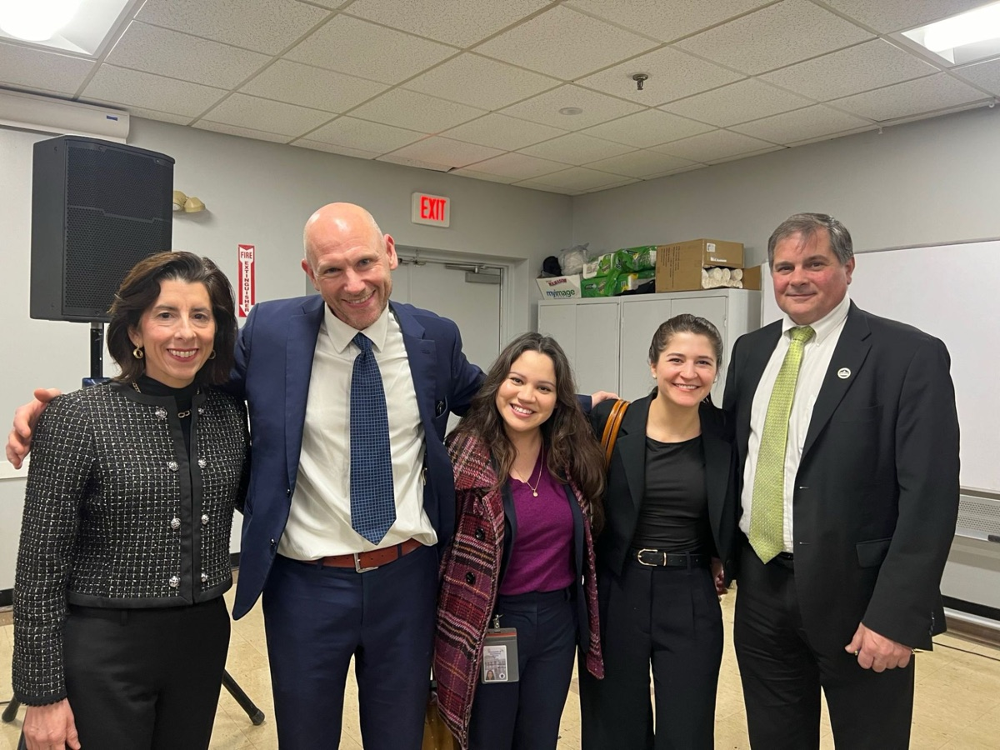
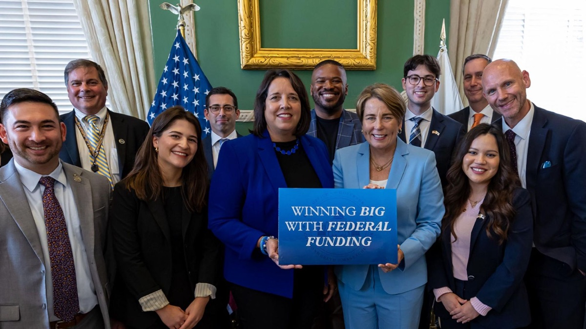

Master in Public Policy (MPP), Harvard Kennedy School
Also completed the Harvard Certificate in Management, Leadership and Decision Sciences.

Public-sector innovation · Resident engagement · AI tools for government
I’m a public-sector problem solver with five years of experience turning complex policy problems into working solutions. I’m currently External Affairs Officer at the San Francisco Department of Emergency Management. Before that, I led federal funds and infrastructure policy for the Commonwealth of Massachusetts, where I helped secure $8 billion for state priorities and piloted an AI tool with municipalities and state agencies. I work with residents and frontline staff to understand a problem on the ground, then turn what I learn into tools, policies and partnerships. I’ve coordinated across federal, state and municipal agencies, including DOE, DOT, EPA and EDA, and I’ve led community outreach from town halls to parent and educator organizing. I hold a Master in Public Policy from the Harvard Kennedy School and a BA in Politics from the University of San Francisco. My toolkit includes data analysis and visualization (R, Stata, SPSS, Tableau), survey design, and Spanish. Outside government, I co-founded and chair the Ratify Movement, which advocates for US ratification of the UN Convention on the Elimination of All Forms of Discrimination Against Women. I also led Mapping Feminist Cambridge, a project on women’s representation in public art. I’m always looking for work that makes public systems more inclusive and sustainable.
Also completed the Harvard Certificate in Management, Leadership and Decision Sciences.
Summa cum laude, minor in Psychology and Peace and Justice Studies. Honors thesis on behavioral economics for environmental policy.

May 2023
I earned my Master in Public Policy at the Harvard Kennedy School, where I focused on climate, economic development and infrastructure. My thesis looked at app-based food delivery and micro-mobility in Boston.

Oct 2023 – Oct 2025
On the Governor's transition team (Nov 2022 – Jan 2023), I authored the transition report that proposed the new Federal Funds and Infrastructure Office. Then I joined that newly created office as Policy Manager. I secured $8 billion for Massachusetts infrastructure, climate, health and equity, drafted executive orders and legislation on infrastructure and construction labor, and built GrantWell, an AI tool that helps communities apply for federal grants.

Oct 2023 – Oct 2025
In the same role, I worked with the Governor's labor advisor on policy for project labor agreements, community benefit agreements, building trades and apprenticeships, and advised cities and towns on fair labor practices for large infrastructure projects.

Oct 2023 – Oct 2025
Federal funding announcements were the result of coordinated work across agencies, municipalities and partners.
Dec 2025 – Present
Today I'm External Affairs Officer at the San Francisco Department of Emergency Management, leading strategic communications, public engagement and funding, and serving as on-call public information officer during emergencies.

An AI tool that helps organizations find federal grants and draft applications. Built for Massachusetts municipalities and under-resourced organizations, with 350 users across 200 communities since its March 2026 launch.
As the Public Policy Fellow at San Francisco’s Department on the Status of Women, I led the research for the city’s first comprehensive analysis of public spaces named after people. Only 13 percent of parks, buildings, streets and art honor women.